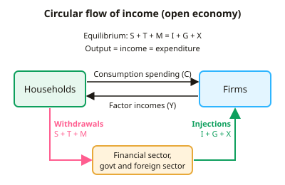

A-level Economics Year 12 · Topic 8
Aggregate demand and aggregate supply
This topic builds the model of aggregate demand and aggregate supply, used to analyse the whole economy.
We will cover the circular flow of income, the components of aggregate demand, and what drives consumption, saving and investment.
Then we look at short and long run aggregate supply, Keynesian and classical views, the multiplier, output gaps and economic shocks.
- 8 subtopics
- 350 questions
- Free: 8.1 notes and 10 questions
In this topic
- 8.1The circular flow of income, injections and withdrawalsFree below · 64 questions
- 8.2Aggregate demand: components and the AD curveOpen in Full Marks · 48 questions
- 8.3Determinants of consumption, saving and investmentOpen in Full Marks · 25 questions
- 8.4Aggregate supply: short-run and long-run AS and factors shifting themOpen in Full Marks · 31 questions
- 8.5Macroeconomic equilibrium: Keynesian and classical views of LRASOpen in Full Marks · 65 questions
- 8.6The multiplier effectOpen in Full Marks · 61 questions
- 8.7Actual and potential growth, output gaps and the economic cycleOpen in Full Marks · 26 questions
- 8.8Demand-side and supply-side shocksOpen in Full Marks · 30 questions
8.1 · Free notes
The circular flow of income, injections and withdrawals

Key points
- The circular flow of income shows how money moves between households (who supply factors of production and receive factor incomes: wages, rent, interest and profit) and firms (who supply goods and services and receive consumption expenditure).
- In a closed economy with no government, national output = income = expenditure. This is an accounting identity because one person's spending is another's income.
- Withdrawals (leakages) reduce the flow of spending on domestic output: saving (S), taxation (T) and imports (M). Remember the mnemonic S + T + M.
- Injections add spending to the flow that does not come from domestic households' current income: investment (I), government spending (G) and exports (X).
- Equilibrium national income occurs where S + T + M = I + G + X, so total withdrawals equal total injections. Saving does not have to equal investment in the open model.
- If injections > withdrawals, national income rises. If withdrawals > injections, national income falls. Income keeps adjusting until the two are equal again.
- Saving is a withdrawal, but it re-enters the flow as an injection when the financial sector lends it to firms for investment. If saving is not lent out, spending falls.
- The multiplier is k = ΔY/ΔJ = 1/(1 − MPC) = 1/MPW. MPW (marginal propensity to withdraw) = MPS + MPT + MPM. For example, MPW = 0.5 gives k = 2, so a £10bn injection raises income by £20bn.
- A higher marginal propensity to withdraw (more saving, tax or imports) reduces the size of the multiplier. Higher marginal propensities to consume domestic output increase it.
- Classify items carefully. Transfer payments (pensions, benefits) are not G, because they are negative taxes and not spending on output. Retained profits count as firms' saving. Spending on imported goods is a withdrawal.
- Models grow in complexity: two-sector (households and firms), three-sector (adds government), four-sector or open economy (adds the foreign sector). The financial sector links saving to investment.
- Limitations to evaluate: the model ignores time lags, differences between planned and actual (ex ante and ex post) flows, and the supply-side. Real flows are affected by price changes and by crowding out.
In more detail
- Worked equilibrium: withdrawals S £300bn + T £600bn + M £700bn = £1,600bn; injections I £350bn + G £650bn + X £650bn = £1,650bn → injections exceed withdrawals by £50bn, so national income rises.
- Worked multiplier: MPS 0.1, MPT 0.25 and MPM 0.3 → MPW = 0.65 → k = 1 ÷ 0.65 ≈ 1.54.
- Transfer payments: a rise in the State Pension is not G, because no output is produced in return; it only adds to spending when pensioners spend it (C).
- Exam tip: classify each flow carefully: VAT is T, buying shares is S, building a school is G, and a UK firm buying machinery is I.
Practice
The circular flow of income, injections and withdrawals: 10 questions
Pick an answer to check it, or open the answer for the explanation.
1. Which of the following is a withdrawal from the circular flow of income?
- Government spending
- Firms' investment spending
- Export earnings
- Household saving
Show answer
D: Household saving. Saving, taxation and imports are withdrawals. Government spending, exports and investment are injections.
2. Which is an injection into the circular flow of income in an open economy with a government?
- Spending on imports
- Income tax receipts
- Household saving
- Export earnings
Show answer
D: Export earnings. Exports bring in spending from abroad on domestic output, so they are an injection. Imports, taxes and saving are withdrawals.
3. Which condition shows that national income is in equilibrium in an open economy with a government?
- C + S = M + X
- S + G + X = I + T + M
- S + T + M = I + G + X
- S + I = T + G
Show answer
C: S + T + M = I + G + X. Equilibrium requires total withdrawals (S + T + M) to equal total injections (I + G + X).
4. An economy has saving £30bn, taxes £40bn, imports £25bn, investment £35bn, government spending £45bn and exports £20bn. What happens to national income?
- Rises, as withdrawals exceed injections by £5bn
- Falls, as withdrawals exceed injections by £5bn
- Rises, as injections exceed withdrawals by £5bn
- Unchanged, as both equal £100bn
Show answer
C: Rises, as injections exceed withdrawals by £5bn. Withdrawals = 30 + 40 + 25 = £95bn. Injections = 35 + 45 + 20 = £100bn. Injections exceed withdrawals, so income rises.
5. MPS = 0.1, MPT = 0.2 and MPM = 0.2. Investment rises by £10bn. Ignoring other effects, national income rises by:
- £50bn
- £10bn
- £5bn
- £20bn
Show answer
D: £20bn. MPW = 0.1 + 0.2 + 0.2 = 0.5. The multiplier is 1/0.5 = 2, so income rises by 2 × £10bn = £20bn.
6. In the simple three-sector model of the circular flow, which sectors are included?
- Households, firms and the foreign sector
- Households and the financial sector only
- All five sectors including the foreign sector
- Households, firms and the government
Show answer
D: Households, firms and the government. The three-sector model adds government (taxes and spending) to the two-sector household and firm model. The foreign sector appears only in the open model.
7. In the circular flow model, national output, national income and national expenditure are:
- Equal in value, since one sector's spending is another's income
- Equal only at full employment
- Equal only when withdrawals exceed injections
- Different, because some income is saved
Show answer
A: Equal in value, since one sector's spending is another's income. Output, income and expenditure measure the same flow from different angles, so they are equal by definition (an accounting identity).
8. A UK household buys a car assembled in Japan. In the circular flow this spending is best described as:
- A withdrawal through taxation
- An injection through investment
- A withdrawal through imports
- An injection into UK firms' revenue
Show answer
C: A withdrawal through imports. Spending on imported goods flows abroad rather than to domestic firms, so it is a withdrawal (M).
9. Which of the following is NOT counted as government spending (G) in aggregate demand?
- Purchase of military equipment
- Building a new bypass
- State pension payments
- Salaries of NHS doctors
Show answer
C: State pension payments. Pensions are transfer payments. They are not spending on output and are treated as negative taxes. The others are spending on goods and services.
10. Which statement about saving and investment in the circular flow is correct?
- Saving is a withdrawal that can never re-enter the flow
- Planned saving always equals planned investment
- Saving is a withdrawal, but returns as an injection if lent for investment
- Saving is an injection because banks hold the funds
Show answer
C: Saving is a withdrawal, but returns as an injection if lent for investment. Saving leaks out of the flow, but the financial sector can lend it to firms. Investment is then an injection. The two need not be equal.
Keep going in Full Marks
Full Marks has 64 questions on The circular flow of income, injections and withdrawals (54 more than here), set out in practice levels. You also get notes and 3D models for all 8 subtopics of Aggregate demand and aggregate supply, plus games, timed exams and past papers.